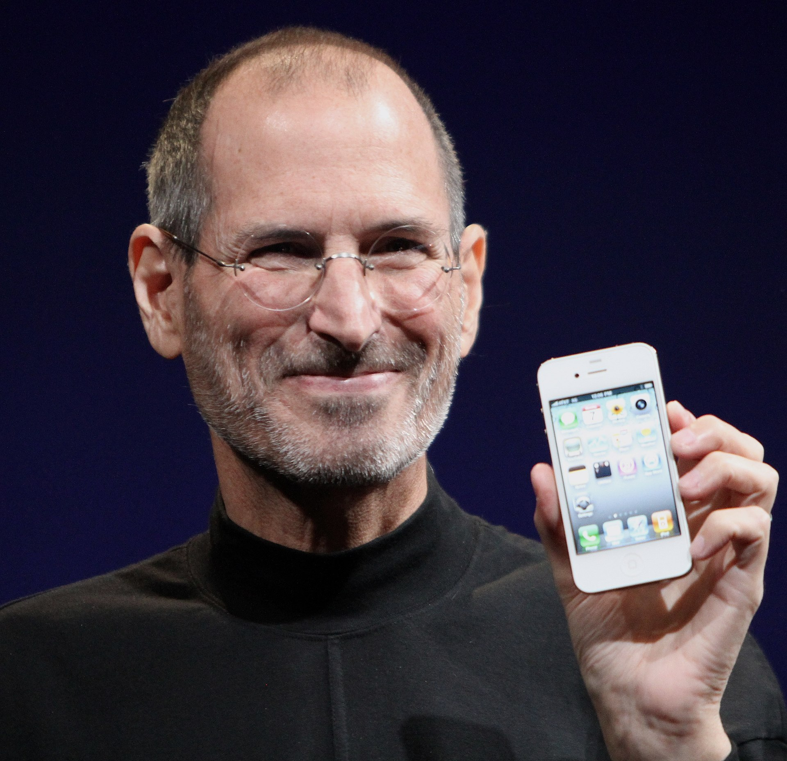

Steven Paul Jobs (February 24, 1955 – October 5, 2011) was an American business magnate, inventor, and investor. He was the co-founder, chairman, and CEO of Apple; the chairman and majority shareholder of Pixar; a member of The Walt Disney Company's board of directors following its acquisition of Pixar; and the founder, chairman, and CEO of NeXT. He was a pioneer of the personal computer revolution of the 1970s and 1980s, along with his early business partner and fellow Apple co-founder Steve Wozniak. board of directors following its acquisition of Pixar, and the founder, chairman, and CEO of NeXT. Jobs is widely recognized as a pioneer of the microcomputer revolution of the 1970s and 1980s, along with Apple co-founder Steve Wozniak.
Apple was founded as Apple Computer Company on April 1, 1976, by Steve Wozniak, Steve Jobs (1955–2011) and Ronald Wayne to develop and sell Wozniak's Apple I personal computer. It was incorporated by Jobs and Wozniak as Apple Computer, Inc. in 1977. The company's second computer, the Apple II, became a best seller and one of the first mass-produced microcomputers. Apple went public in 1980 to instant financial success.
Early life and education
Family
Steven Paul Jobs was born in San Francisco, California, on February 24, 1955, to Joanne Carole Schieble and Abdulfattah "John" Jandali (Arabic: عبد الفتاح الجندلي). Jandali was born in a Muslim household to wealthy Syrian parents, the youngest of nine siblings.
Schieble requested that her son be adopted by college graduates. A lawyer and his wife were selected, but they withdrew after discovering that the baby was a boy, so Jobs was instead adopted by Paul Reinhold and Clara (née Hagopian) Jobs. Paul Jobs was the son of a dairy farmer; after dropping out of high school, he worked as a mechanic, then joined the U.S. Coast Guard.
Infancy
In his youth, Jobs's parents took him to a Lutheran church. When Steve was in high school, Clara admitted to his girlfriend, Chrisann Brennan, that she "was too frightened to love Steve for the first six months of his life … I was scared they were going to take him away from me."
Of all the inventions of humans, the computer is going to rank near or at the top as history unfolds and we look back. It is the most awesome tool that we have ever invented. I feel incredibly lucky to be at exactly the right place in Silicon Valley, at exactly the right time, historically, where this invention has taken form.
Childhood
Paul Jobs worked in several jobs that included a try as a machinist, several other jobs, and then "back to work as a machinist". Paul and Clara adopted Jobs's sister Patricia in 1957 and by 1959 the family had moved to the Monta Loma neighborhood in Mountain View, California. Paul built a workbench in his garage for his son in order to "pass along his love of mechanics".
I always thought of myself as a humanities person as a kid, but I liked electronics … then I read something that one of my heroes, Edwin Land of Polaroid, said about the importance of people who could stand at the intersection of humanities and sciences, and I decided that's what I wanted to do.
External links
Steve Jobs
Timeline, Apple Computer history, Macintosh, NeXTPixar, Return to Apple "Thoughts on Flash"
Apple
History, Outline, Timeline of products, Environment, Marketing, Supply chain
Key figures in the history of Apple Inc.
Steve Jobs, Steve Wozniak, Ronald Wayne